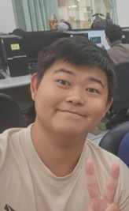
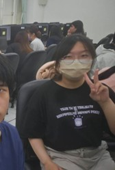

期末研究成果展示 · 2026
本研究探討台灣在地有機小農如何透過社群媒體與數位平台運用「故事行銷」策略，建立品牌競爭力，並分析其對消費者行為與滿意度的影響。
Abstract / 摘要
本研究旨在探討台灣在地有機小農在競爭日益激烈的市場環境中，如何透過社群媒體與數位平台運用「故事行銷」策略建立品牌競爭力。研究結合了量化問卷調查與質性文本分析，分析發現台灣茶產業總產值雖高達 1,500 億元，但進口茶占比超過 50%，迫使小農轉向高品質、高價值的競爭路徑。
研究結果顯示，「產品特色」與「遊客滿意度」呈現極高度正相關（r = 0.810），而故事行銷的成功關鍵在於建構「真實性」，包括披露創辦人背景、生產艱辛及利他動機等 10 大元素。透過將農產品轉化為「文化象徵」，小農能有效建立消費者的情感連結，縮短生產端與通路端的資訊距離。
Team / 團隊成員
就讀於國立屏東科技大學農企業管理系，深入學習農業、行銷管理與經營管理等專業課程，逐漸建立起將「傳統農業」與「現代管理」相結合的跨領域思維。屏科大擁有得天獨厚的農業生態環境，不僅能吸收課堂理論，更有機會親自參與產業實際運作的個案分析。面對農業轉型與電商化的趨勢，平時積極關注智慧農業與永續發展的議題，希望將數據分析與行銷策略實際應用於未來的實務工作或實習中。具備良好的團隊合作與溝通能力，期待透過本次研究帶來創新思維與熱忱，為台灣有機農業的數位轉型貢獻一份心力。本次研究中主要負責文獻整理、問卷設計與統計分析，並統籌各組員工作進度。

就讀於國立屏東科技大學農企業管理系，對農業管理和創新有著濃厚的興趣，希望未來能將所學應用於實際的農業運作中，為台灣的農業發展貢獻一份心力。在課堂上學習了農業經濟、農產品行銷、農業政策等專業知識，也透過實習和實作活動累積實務經驗。樂於學習、勇於挑戰，也喜歡與人溝通合作。本次研究中主要負責質性訪談文本分析及案例整理，深入分析阿里山拉拉吉珈琲與鹿野紅烏龍業者的轉型歷程，將田野資料轉化為具體的策略建議，對本研究的故事行銷策略矩陣建構有重要貢獻。

就讀於國立屏東科技大學農企業管理系，對農產品加工、品牌建立以及國際貿易深感興趣，希望未來能將高品質的台灣農產品推向國際市場。在課堂上學習了食品科學、行銷管理、國際商務等相關知識，也透過參加比賽和社團活動提升了自己的能力。樂觀開朗、做事認真負責，也喜歡接觸新事物。本次研究中主要負責網站製作、簡報設計及 Podcast 腳本撰寫，致力於將複雜的學術研究內容轉化為易於理解的視覺呈現，讓研究成果能更廣泛地被社會大眾所接受，深刻體認到視覺溝通在農業行銷上的重要性。
Research Report / 研究報告
以下為完整研究報告全文，可直接在頁面中閱讀，或點選下方按鈕下載 PDF 版本。
Presentation / 簡報成果
本研究簡報共 10 頁，涵蓋研究背景、核心問題、故事行銷策略矩陣、關鍵數據、案例分享與結論展望。
Podcast / 音頻節目
我們將研究核心內容製作成 Podcast 節目，以輕鬆對談的方式介紹台灣有機小農如何透過故事行銷突破重圍。
Video Overview / 教學影片
以下影片為本研究的 Video Overview，以視覺化方式呈現研究動機、方法與核心發現，適合快速瀏覽研究精華。
影片長度：約 5–10 分鐘｜製作：研究團隊
Key Findings / 研究發現
量化分析顯示，「產品特色」與「遊客滿意度」呈極高度正相關。小農在社群媒體上呈現「視覺化的生產美學」（如採茶一心二葉、田間生態），比單純價格訴求更能有效提升顧客忠誠度。
研究歸納出 10 大建構品牌真實性的元素，其中「創辦人背景」（留學背景、原本職業）與「利他動機」（為孩子健康回鄉、守護土地）最能讓消費者產生信仰與歸屬感，有效降低商業操弄感。
核心客群以女性（56.7%）及 41 歲以上中高齡族群（超過 2/3）為主，在五點量表中「品質保證」（4.74 分）與「在地化」（4.52 分）獲最高重視，提示行銷應強調健康養生與食安保障。
將農產品從物資（Commodity）提升至體驗（Experience），例如品茶音樂會、製茶導覽或沉浸式測驗，能使產品轉化為具「人文記憶」的文化象徵，創造遠高於傳統農業的附加價值。
資訊互動系統（如互動推播、揪團元件）能讓小農精準分析哪些故事內容引發消費行為，從而即時調整種植計畫或行銷腳本，將社群流量有效變現為穩定的熟客社群。